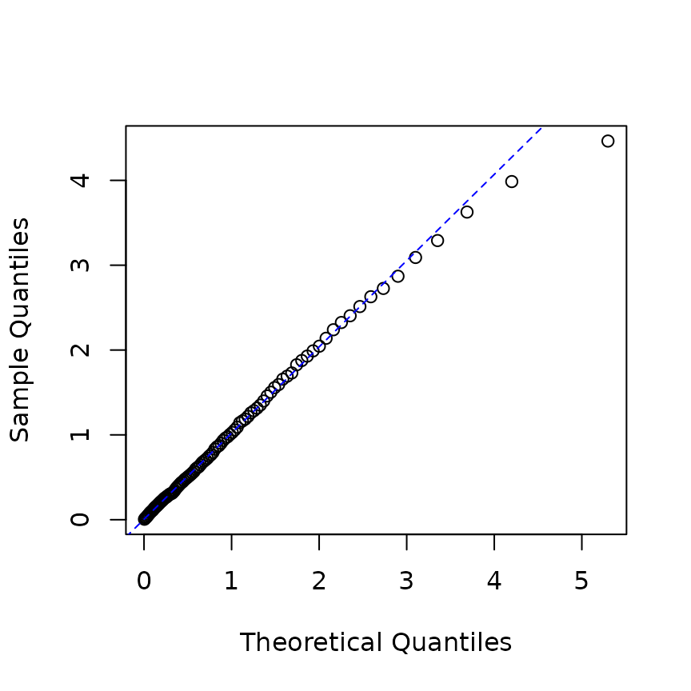
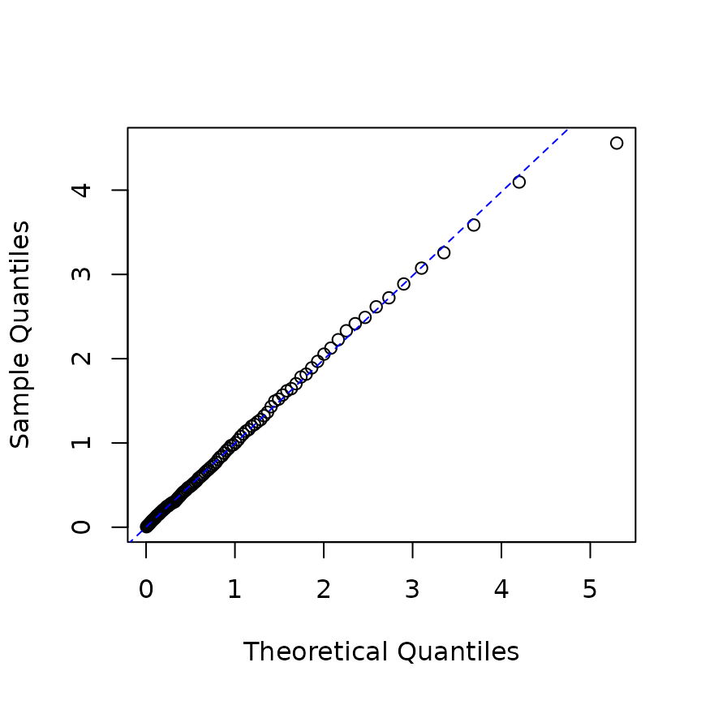
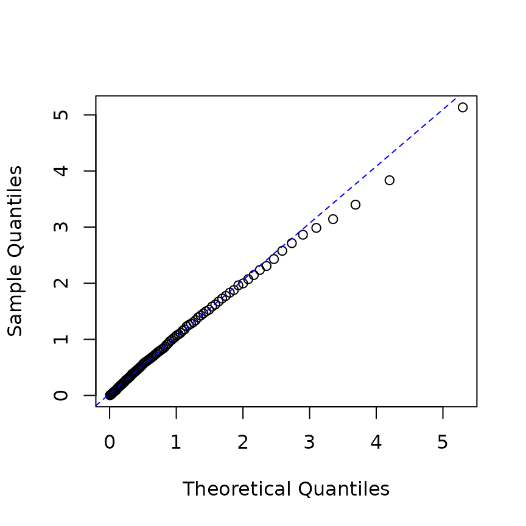
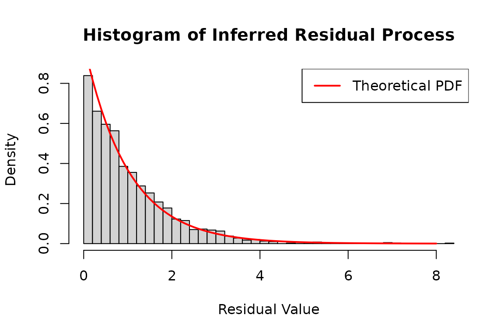

Fitting and inference
Kyungsub Lee
2026-10-20
Source:vignettes/articles/fitting-and-inference.Rmd
fitting-and-inference.RmdThis guide explains estimation and interpretation after the Get started workflow. See Examples overview for model specifications and Computation for engines, gradients and Jacobians.
Working example
The following bivariate model supplies the data used below.
library(emhawkes)
h <- new("hspec",
mu = c(0.2, 0.2),
alpha = matrix(c(0.5, 0.9, 0.9, 0.5), 2, byrow = TRUE),
beta = matrix(2.25, 2, 2)
)
set.seed(1107)
path <- hsim(h, size = 1000)
#> Initial intensity components: auto -> mean (unconditional component means).
fit <- hfit(h, path$inter_arrival, path$type)
#> Registered S3 methods overwritten by 'maxLik':
#> method from
#> coef.maxLik emhawkes
#> logLik.maxLik emhawkes
#> print.maxLik emhawkes
#> summary.maxLik emhawkes
#> vcov.maxLik emhawkes
#> Initial intensity components: auto -> mean (unconditional component means).
#> hfit: equal starting values within each matrix share a parameter (reduced = TRUE; mu, alpha, beta).
#> Use reduced = FALSE to estimate matrix entries separately.
summary(fit)
#> --------------------------------------------
#> Maximum Likelihood estimation
#> BFGS maximization, 33 iterations
#> Return code 0: successful convergence
#> Log-Likelihood: -970.1408
#> 4 free parameters
#> Estimates:
#> Estimate Std. error t value Pr(> t)
#> mu1 0.19095 0.01638 11.656 < 2e-16 ***
#> alpha1.1 0.48217 0.07430 6.489 8.64e-11 ***
#> alpha1.2 0.98625 0.09576 10.300 < 2e-16 ***
#> beta1.1 2.07987 0.17203 12.091 < 2e-16 ***
#> ---
#> Signif. codes: 0 '***' 0.001 '**' 0.01 '*' 0.05 '.' 0.1 ' ' 1
#> --------------------------------------------Parameter sharing and fixed entries
By default, reduced = TRUE treats equal starting values
within each parameter matrix as one parameter. This
example estimates four parameters: one for mu, two for
alpha, and one for beta. hfit()
explains this rule once before optimization.
Use reduced = FALSE to estimate the ten matrix entries
separately, even when their starting values are equal. Function
components share parameters by name under either setting. A zero in a
numeric matrix is also a starting value; use a component function to fix
selected entries at zero.
The following examples show how starting values change the parameter map.
hspec2 <- h
res2 <- pathThe sharing rule is applied separately to each matrix; equal values
in mu and alpha do not link those components.
The startup message lists matrices with shared entries. Use
suppressMessages(hfit(...)) to hide it.
For example, if alpha[1,1] and alpha[1,2]
have different initial values, hfit estimates them
separately. If they have the same initial value, hfit
treats them as a single parameter.
The previous example uses a symmetric Hawkes model:
alpha is symmetric, and all entries of beta
are equal.
print(hspec2)
#> An object of class "hspec" of 2-dimensional Hawkes process
#>
#> Slot mu:
#> [,1]
#> [1,] 0.2
#> [2,] 0.2
#>
#> Slot alpha:
#> [,1] [,2]
#> [1,] 0.5 0.9
#> [2,] 0.9 0.5
#>
#> Slot beta:
#> [,1] [,2]
#> [1,] 2.25 2.25
#> [2,] 2.25 2.25
set.seed(1107)
res2 <- hsim(hspec2, size = 1000)
#> Initial intensity components: auto -> mean (unconditional component means).In the first example, all entries of alpha0 are set to
0.75. This constrains alpha11, alpha12,
alpha21, and alpha22 to share one estimated
value, even though their simulation values differ. The same rule applies
within mu0 and beta0.
mu0 <- matrix(c(0.15, 0.15), nrow = 2)
alpha0 <- matrix(c(0.75, 0.75, 0.75, 0.75), nrow = 2, byrow=TRUE)
beta0 <- matrix(c(2.6, 2.6, 2.6, 2.6), nrow = 2, byrow=TRUE)
hspec0 <- new("hspec", mu=mu0, alpha=alpha0, beta=beta0)
summary(hfit(hspec0, inter_arrival = res2$inter_arrival, type = res2$type))
#> Initial intensity components: auto -> mean (unconditional component means).
#> hfit: equal starting values within each matrix share a parameter (reduced = TRUE; mu, alpha, beta).
#> Use reduced = FALSE to estimate matrix entries separately.
#> --------------------------------------------
#> Maximum Likelihood estimation
#> BFGS maximization, 46 iterations
#> Return code 0: successful convergence
#> Log-Likelihood: -979.5687
#> 3 free parameters
#> Estimates:
#> Estimate Std. error t value Pr(> t)
#> mu1 0.19125 0.01633 11.71 <2e-16 ***
#> alpha1.1 0.73981 0.05783 12.79 <2e-16 ***
#> beta1.1 2.09707 0.15936 13.16 <2e-16 ***
#> ---
#> Signif. codes: 0 '***' 0.001 '**' 0.01 '*' 0.05 '.' 0.1 ' ' 1
#> --------------------------------------------This fit estimates one excitation parameter for both self-excitation and mutual excitation, whose simulation values are 0.5 and 0.9, respectively.
In the second example, alpha0 has the same symmetry as
the simulation model. Its diagonal entries are equal, and its
off-diagonal entries share a different value. The model therefore has
two excitation parameters to estimate.
mu0 <- matrix(c(0.15, 0.15), nrow = 2)
alpha0 <- matrix(c(0.75, 0.751, 0.751, 0.75), nrow = 2, byrow=TRUE)
beta0 <- matrix(c(2.6, 2.6, 2.6, 2.6), nrow = 2, byrow=TRUE)
hspec0 <- new("hspec", mu=mu0, alpha=alpha0, beta=beta0)
summary(hfit(hspec0, inter_arrival = res2$inter_arrival, type = res2$type))
#> Initial intensity components: auto -> mean (unconditional component means).
#> hfit: equal starting values within each matrix share a parameter (reduced = TRUE; mu, alpha, beta).
#> Use reduced = FALSE to estimate matrix entries separately.
#> --------------------------------------------
#> Maximum Likelihood estimation
#> BFGS maximization, 30 iterations
#> Return code 0: successful convergence
#> Log-Likelihood: -970.1408
#> 4 free parameters
#> Estimates:
#> Estimate Std. error t value Pr(> t)
#> mu1 0.19095 0.01639 11.647 < 2e-16 ***
#> alpha1.1 0.48226 0.07292 6.614 3.74e-11 ***
#> alpha1.2 0.98626 0.09287 10.620 < 2e-16 ***
#> beta1.1 2.08008 0.16593 12.536 < 2e-16 ***
#> ---
#> Signif. codes: 0 '***' 0.001 '**' 0.01 '*' 0.05 '.' 0.1 ' ' 1
#> --------------------------------------------The third example allows mu1 and mu2 to
differ, even though they are equal in the simulation model.
mu0 <- matrix(c(0.15, 0.14), nrow = 2)
alpha0 <- matrix(c(0.75, 0.751, 0.751, 0.75), nrow = 2, byrow=TRUE)
beta0 <- matrix(c(2.6, 2.6, 2.6, 2.6), nrow = 2, byrow=TRUE)
hspec0 <- new("hspec", mu=mu0, alpha=alpha0, beta=beta0)
summary(hfit(hspec0, inter_arrival = res2$inter_arrival, type = res2$type))
#> Initial intensity components: auto -> mean (unconditional component means).
#> hfit: equal starting values within each matrix share a parameter (reduced = TRUE; alpha, beta).
#> Use reduced = FALSE to estimate matrix entries separately.
#> --------------------------------------------
#> Maximum Likelihood estimation
#> BFGS maximization, 42 iterations
#> Return code 0: successful convergence
#> Log-Likelihood: -969.9914
#> 5 free parameters
#> Estimates:
#> Estimate Std. error t value Pr(> t)
#> mu1 0.18300 0.02157 8.484 <2e-16 ***
#> mu2 0.19872 0.02206 9.006 <2e-16 ***
#> alpha1.1 0.48149 0.07569 6.361 2e-10 ***
#> alpha1.2 0.98720 0.09852 10.020 <2e-16 ***
#> beta1.1 2.07973 0.17931 11.598 <2e-16 ***
#> ---
#> Signif. codes: 0 '***' 0.001 '**' 0.01 '*' 0.05 '.' 0.1 ' ' 1
#> --------------------------------------------Set reduced = FALSE to estimate each matrix entry
separately, including entries with equal initial values.
summary(hfit(hspec2, inter_arrival = res2$inter_arrival, type = res2$type, reduced=FALSE))
#> Initial intensity components: auto -> mean (unconditional component means).
#> hfit: some standard errors are NaN. Try final_hessian = "stable" for Hawkes Hessian diagnostics, then inspect fit_diagnostics().
#> --------------------------------------------
#> Maximum Likelihood estimation
#> BFGS maximization, 51 iterations
#> Return code 0: successful convergence
#> Log-Likelihood: -966.5055
#> 10 free parameters
#> Estimates:
#> Estimate Std. error t value Pr(> t)
#> mu1 0.17997 0.02231 8.066 7.24e-16 ***
#> mu2 0.20060 0.02335 8.590 < 2e-16 ***
#> alpha1.1 0.44726 0.10661 4.195 2.73e-05 ***
#> alpha2.1 1.17743 NaN NaN NaN
#> alpha1.2 0.97048 0.10742 9.035 < 2e-16 ***
#> alpha2.2 0.48979 NaN NaN NaN
#> beta1.1 2.52210 NaN NaN NaN
#> beta2.1 3.15498 NaN NaN NaN
#> beta1.2 1.80167 0.07600 23.705 < 2e-16 ***
#> beta2.2 1.51338 NaN NaN NaN
#> ---
#> Signif. codes: 0 '***' 0.001 '**' 0.01 '*' 0.05 '.' 0.1 ' ' 1
#> --------------------------------------------The same rules apply to higher-dimensional models. For function
components, the named entries in param define the estimated
parameters. Matching parameter names are shared across functions, even
with reduced = FALSE. Use different names for independent
parameters with equal starting values. Conflicting starting values for a
shared name produce a warning, and the first value is used. A zero in a
numeric matrix is an estimated starting value; constants inside a
component function remain fixed.
Observed data and initial state
The first data row is the initial state. inter_arrival,
type, and mark start with zero, followed by
the observed events. hsim(size) includes this initial row.
N0 and Nc0 specify initial counts and mark
totals; Nc0 must be named in hfit().
The likelihood ends at the last supplied event. N0 and
Nc0 accept a scalar or one value per event type. Supplied
N and Nc matrices must agree with the event
data and initial counts. Explicit type_col_map requires
initial kernel components for simulation and the built-in
likelihood.
Event order is preserved when times coincide. Use the same initial
counts and lambda_component0 for simulation and likelihood
evaluation when comparing paths. A scalar lambda_component0
is expanded to all kernel components; a matrix must match the kernel
dimensions. For multi-kernel models, supply it explicitly.
Counting-process matrices supplied as N or
Nc must agree with the event data and initial counts. Each
row contains the values after that event. A baseline function called
with index n uses row n - 1 for the preceding
state; an impact function uses row n for the current event.
Component functions can declare only the arguments they need, and use
... to receive the remaining context.
Prepare observed event times measured from the observation start as follows:
Omit type for a univariate model and mark
for unit marks. The vectors must have the same length; event types range
from 1 to the model dimension.
Restoring and saving a fitted model
Use fitted_hspec(fit) to restore the estimated model and
fit_initial_state(fit) to retrieve the initial-state
arguments:
estimated <- fitted_hspec(fit)
initial <- fit_initial_state(fit)
inferred <- do.call(logLik, c(list(object = estimated,
inter_arrival = path$inter_arrival, type = path$type, mark = path$mark,
infer = TRUE), initial))
#> Initial intensity components: mean (unconditional component means).The result remains a maxLik object, so
coef(), summary(), and vcov()
keep their existing behavior. The saved parameter map preserves shared
parameters and fixed constants in component functions. Simulation
generators are retained, and their named parameters are updated when
they match estimated coefficient names. Automatic initial intensity
remains NULL and is recalculated for the restored model.
Initial counts are retained. A custom objective is not incorporated into
the restored model.
Save the fit with saveRDS() to retain this information
between sessions. Keep the observed data separately and supply them
again for inference. The stored optimization objective can retain data
in its function environment. The saved initial state describes the start
of the observation window. Pass it to hsim() to start a new
path from the estimated model. Continuing after the last observed event
requires that event’s state. Fits created without the new metadata need
to be refitted before using the reconstruction helpers.
Pass the restored specification and the saved initial-state arguments
to hsim() to generate a new path after checking convergence
and model suitability.
set.seed(1108)
simulated <- do.call(hsim, c(list(object = estimated, size = 100), initial))
head(simulated$arrival)
#> [1] 0.000000 2.526746 2.946904 3.216280 3.253234 4.359288
saveRDS(fit, "hawkes-fit.rds")
saved_fit <- readRDS("hawkes-fit.rds")
estimated <- fitted_hspec(saved_fit)
initial <- fit_initial_state(saved_fit)Curvature and standard errors
By default, hfit() uses the final Hessian and standard
errors from maxLik. It does not run the additional
stabilization checks. If numerical Hawkes standard errors contain
NaN, a short message suggests trying
final_hessian = "stable". Request this option to check
numerical Hawkes curvature with scaled central differences and
Richardson extrapolation. With auto or cpp,
stable curvature differentiates the built-in analytic score when the
model is supported and any required component Jacobians are supplied.
This also works with the default numerical optimizer gradient.
Unsupported score models, missing Jacobians, or failed score evaluations
use likelihood differences; r always uses likelihood
differences. Inspect curvature_source and
score_fallback_reason in fit_diagnostics(fit)
for the selected path. This preserves the optimizer’s coefficients and
log-likelihood. summary() and vcov() then use
the checked covariance; free-parameter standard errors are
NA when stable inversion is unavailable. Inspect
fit_diagnostics(fit) for the requested checks. Supplied
Hessians, disabled final curvature, BHHH, custom objectives, and
residual models retain their calculation choices.
For unconstrained BFGS, CG, Nelder-Mead, and SANN fits without
supplied hess or finalHessian, stable
curvature omits maxLik’s separate final Hessian. Inspect
fit_diagnostics(fit)$computation$hessian$maxLik_skipped;
the omitted matrix is not stored in original_hessian. Use
finalHessian = TRUE to retain that extra calculation. The
default final_hessian = "maxLik" is unchanged.
A stable Hessian does not guarantee reliable Wald intervals. Nearby kernel decay rates, weak excitation, boundaries, short samples, and nonsmooth callbacks can still make inference unreliable. The Hawkes standard-error report compares unchanged estimates and corrected standard errors, and discusses profile likelihood and bootstrap. The earlier diagnostic report records the original Hawkes and FRPP issues.
Check convergence, score, and multiple starting values before interpreting intervals.
For otherwise identical kernels driven by the same events, equal decay rates can leave only the combined amplitude identifiable. Small excitation alone does not require missing standard errors: known initial excitation can still carry decay information. See the Hawkes curvature stress checks.
For checked fits, an unsuccessful optimizer triggers a warning even
when stable curvature is unavailable. Inspect
optimizer_success, optimizer_code and
warnings in fit_diagnostics(fit) alongside its
curvature status and reason.
fit_checked <- hfit(h, path$inter_arrival, path$type, final_hessian = "stable")
#> Initial intensity components: auto -> mean (unconditional component means).
#> hfit: equal starting values within each matrix share a parameter (reduced = TRUE; mu, alpha, beta).
#> Use reduced = FALSE to estimate matrix entries separately.
fit_diagnostics(fit_checked)[c("status", "scaled_condition", "newton_decrement")]
#> $status
#> [1] "ok"
#>
#> $scaled_condition
#> [1] 25.35156
#>
#> $newton_decrement
#> [1] 8.296909e-06The calculation record is explained in Computation.
Residual diagnostics
logLik(h, ..., infer = TRUE) returns a list with the
likelihood, intensity paths, and residual vectors. Use it in place of
the deprecated infer_lambda() and
residual_process() helpers. Simulation returns an
hreal object.
Set infer = TRUE in logLik to obtain the
log-likelihood, intensity paths, and residual processes. These are
computed using the parameters in the supplied hspec object.
For a univariate model, res_process1 contains the residual
inter-arrival times.
hrp <- new("hspec", mu = 0.3, alpha = 1.2, beta = 1.5)
res_rp <- hsim(hrp, size = 1000)
# inferred result
infered_res <- logLik(hrp, res_rp$inter_arrival, infer = TRUE)
## QQ-plot
p <- ppoints(100)
q <- quantile(infered_res$res_process1, p = p)
plot(qexp(p), q, xlab="Theoretical Quantiles",ylab="Sample Quantiles")
qqline(q, distribution=qexp,col="blue", lty=2)
For observed data, estimate the parameters before computing the residual processes.
# estimation
mle_rp <- hfit(new("hspec", mu = 0.2, alpha = 1, beta = 2),
res_rp$inter_arrival)
# Restore the estimated model and the initial-state arguments.
he <- fitted_hspec(mle_rp)
initial_rp <- fit_initial_state(mle_rp)
# infer intensity
infered_res <- do.call(logLik, c(list(object = he,
inter_arrival = res_rp$inter_arrival, type = res_rp$type, infer = TRUE), initial_rp))
rpe <- infered_res$res_process1
p <- ppoints(100)
q <- quantile(rpe, p=p)
plot(qexp(p), q, xlab="Theoretical Quantiles",ylab="Sample Quantiles")
qqline(q, distribution=qexp,col="blue", lty=2)
For an
-dimensional
model, logLik returns one residual process for each event
type. In the following bivariate example, these are
infer_res2$res_process1 and
infer_res2$res_process2.
hrp2 <- new("hspec", mu = rep(0.3, 2),
alpha = matrix(c(1.2, 1.5, 1.5, 1.2), nrow=2),
beta = matrix(rep(3, 4), nrow=2))
res_hrp2 <- hsim(hrp2, size = 2000)
infer_res2 <- logLik(hrp2, res_hrp2$inter_arrival, res_hrp2$type, infer = TRUE)
p <- ppoints(100)
q <- quantile(c(infer_res2$res_process1, infer_res2$res_process2), p=p)
plot(qexp(p), q, xlab="Theoretical Quantiles",ylab="Sample Quantiles")
qqline(q, distribution=qexp,col="blue", lty=2)
# Plot the pooled residuals for both event types.
hist(
c(infer_res2$res_process1, infer_res2$res_process2),
breaks = 50,
probability = TRUE,
main = "Histogram of Inferred Residual Process",
xlab = "Residual Value",
ylab = "Density"
)
x <- seq(0, 8, 0.1)
lines(
x,
dexp(x),
col = 'red',
lwd = 2
)
legend("topright", legend = "Theoretical PDF", col = "red", lwd = 2)
Residual checks assess model adequacy; they do not replace convergence or curvature checks. See the frpp examples for models with a non-exponential residual law. FRPP-specific functionality is planned to move to that package; simple custom-residual models remain supported in emhawkes. The Hawkes residual diagnostics above remain in emhawkes.